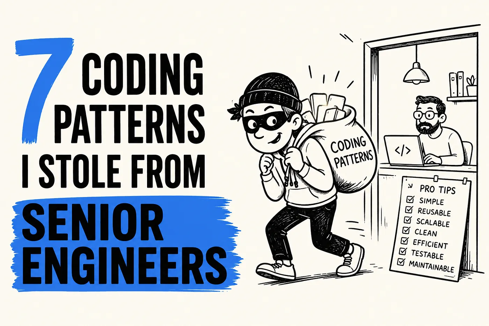
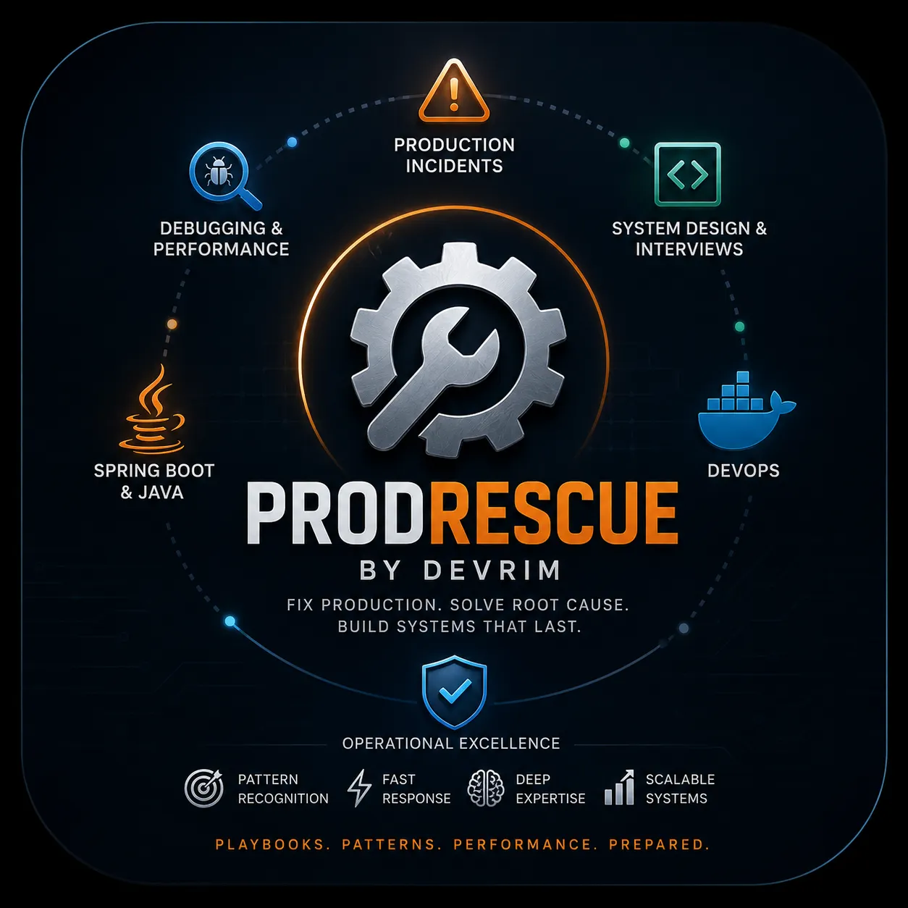
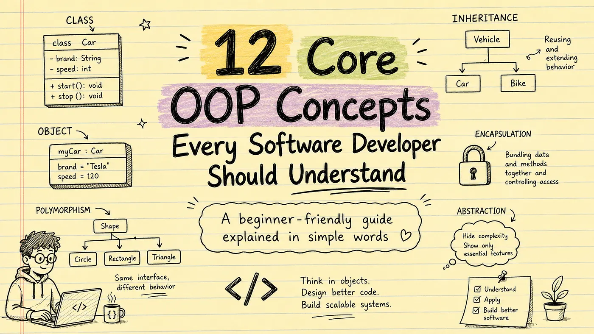

Understanding CSS Grid Layout from Scratch
Learn how CSS Grid helps you create modern web layouts with rows, columns and responsive designs using simple examples.
Learn how CSS Grid helps you create modern web layouts with rows, columns and responsive designs using simple examples.
Discover modern CSS techniques that make your layouts cleaner, faster and fully responsive across every screen size.

Master Flexbox by creating navigation bars, cards, dashboards, galleries and responsive layouts with practical examples.

Improve your websites by learning spacing, typography, colors, cards and layouts that create a professional user experience.
